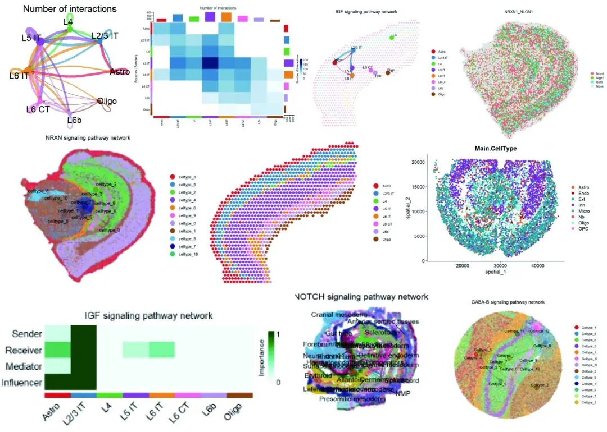
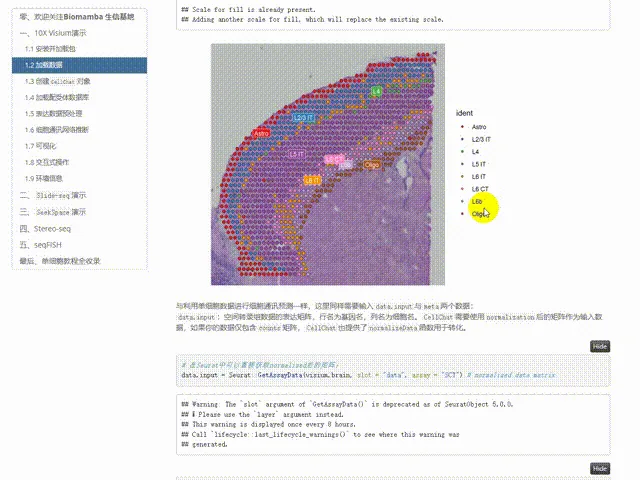
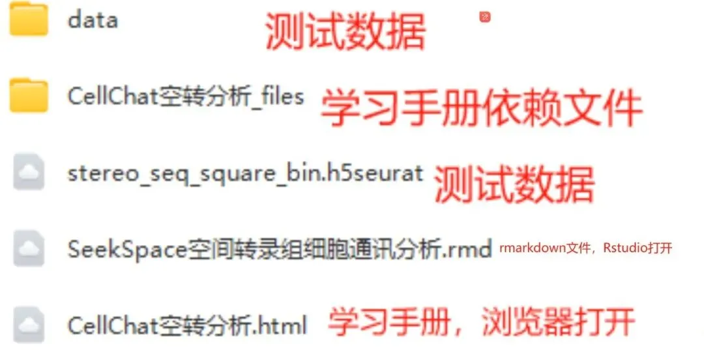

CellChat空转细胞通讯合辑
原文：https://mp.weixin.qq.com/s?__biz=MzAwMzIzOTk5OQ==&mid=2247512011&idx=1&sn=fbd41832c5995d79fead016931d3bfbd&chksm=9b3cd69bac4b5f8d16e7d8b8eeb5490e4938daf68902b06a8d60e25f150ec4ec459796f3aaac#rd 合集：单细胞教程全收录 / 空间转录组

写在前面

 CellChat是一款用于分析和可视化单细胞水平下细胞间通讯的R包。它通过内置数据库和算法来识别和量化细胞间的通讯网络，完成识别信号通路、构建通讯网络、可视化、交互式分析等过程，揭示细胞如何通过信号传导相互作用。此前我们更新过CellChat分析单细胞数据的教程(《细胞通讯》CellChat学习手册)，但是从2023年发布的CellChat V2开始，这一工具就开始支持空间转录组的细胞通讯分析，这里我们整理了以10X Visium、Slide-seq、SeekSpace、Stereo-seq、SeqFISH平台的空间转录组为例的CellChat空间转录组数据分析。自学能力强的小伙伴可以直接前往官网学习：https://github.com/sqjin/CellChat测试数据和教程需要依赖较高配置的计算资源，硬件跟不上的同学可参考：足够支持你完成硕博生涯的生信环境
分析图片集锦
CellChat是一款用于分析和可视化单细胞水平下细胞间通讯的R包。它通过内置数据库和算法来识别和量化细胞间的通讯网络，完成识别信号通路、构建通讯网络、可视化、交互式分析等过程，揭示细胞如何通过信号传导相互作用。此前我们更新过CellChat分析单细胞数据的教程(《细胞通讯》CellChat学习手册)，但是从2023年发布的CellChat V2开始，这一工具就开始支持空间转录组的细胞通讯分析，这里我们整理了以10X Visium、Slide-seq、SeekSpace、Stereo-seq、SeqFISH平台的空间转录组为例的CellChat空间转录组数据分析。自学能力强的小伙伴可以直接前往官网学习：https://github.com/sqjin/CellChat测试数据和教程需要依赖较高配置的计算资源，硬件跟不上的同学可参考：足够支持你完成硕博生涯的生信环境
分析图片集锦

-Biomamba

所见即所得
学习手册可直接用浏览器打开：

下载的资料内容包括：

解锁前需阅读：龙年订阅须知

文末还可解锁以下内容


龙年订阅合集持续更新中，联系客服微信[Biomamba_yunying]可以119￥获取全部资料(包括今年后面更新的内容)。当然，付费不是目的，以下资料都可以通过转发领取(更推荐这种方式)。
龙年订阅须知 单细胞Figure 1常见图表 快速上手Seurat V5 机器学习基础手册 scRNA-Seq学习手册Seurat V4修订版 Bulk RNASeq| 转录组实战scRNA-Seq双细胞过滤手册

订阅后获取学习手册下载链接：